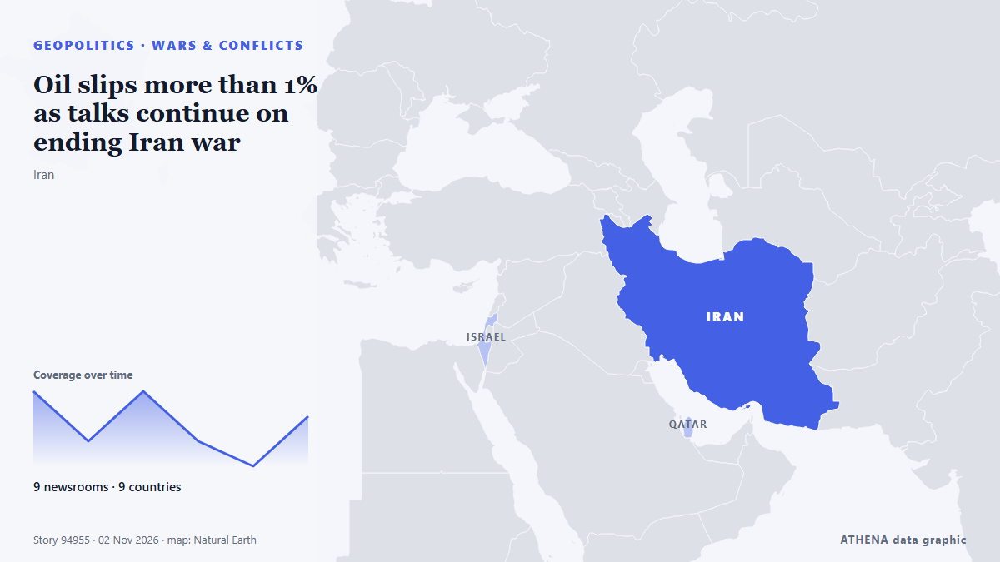

Πόλεμοι & συγκρούσεις
| 20 Οκτ | 1 |
|---|---|
| 21 Οκτ | 0 |
| 22 Οκτ | 0 |
| 23 Οκτ | 1 |
| 24 Οκτ | 0 |
| 25 Οκτ | 0 |
| 26 Οκτ | 0 |
| 27 Οκτ | 2 |
| 28 Οκτ | 3 |
| 29 Οκτ | 3 |
| 30 Οκτ | 3 |
| 31 Οκτ | 6 |
| 1 Νοε | 5 |
| 2 Νοε | 0 |
Οι τίτλοι των ειδήσεων παρουσιάζονται στα αγγλικά, όπως δημοσιεύτηκαν.

Oil slips more than 1% as talks continue on ending Iran war
Both oil benchmarks are down in early trading. από The Business Times
Trump says Iran war will end ‘very soon, one way or the other’
President Trump expressed optimism that the conflict with Iran would end soon, though he didn’t provide specific details on how this would occur. από Arab News
Israeli strikes in Gaza kill 8, including a child
Five people were killed in Khan Yunis and three in Gaza City, according to Gaza's civil defence service. από Free Malaysia Today
Ukraine claims strike on major Russian oil refinery near Moscow
Russia reports significant damage to an industrial facility in the Nizhny Novgorod region after a massive overnight drone attack, as Kiev claims it targeted the Kstovo oil refinery. από TRT World
Iran warns US, Israel against new attacks after Trump, Netanyahu threats
TEHERAN: Iran’s supreme leader warned the United States and Israel Saturday of fresh attacks following their threats to resume strikes after crucial elections, as fears increased over a return to… από New Straits Times
Iran’s army warns any new US attack would spread war wider
The warning came amid renewed diplomatic efforts to prevent fighting from resuming, including a visit by Qatari mediators to Tehran. από Free Malaysia Today
3 Killed as Ukraine Renews Drone Strikes Against Oil Refineries
Deputy Prime Minister Alexander Novak confirmed that Ukrainian drones targeted three oil refineries and one gas chemical complex overnight. από The Moscow Times
US attacks 2 Iranian fishing boats off Masan, Qeshm Island
Iranian state broadcaster IRIB, citing a Hormozgan province official, said on Saturday that the US attacked two fishing boats near Qeshm Island, leaving two fishermen missing and one wounded. από Business Recorder
Saudi-led coalition says it intercepted 'hostile' drone over Riyadh region
Coalition spokesman says debris falls after interception but causes no casualties as authorities inspect site. από Anadolu Agency (English)
Saudi-led coalition says it intercepted Houthi drone near Riyadh
Riyadh: Saudi forces on Tuesday intercepted a ballistic missile aimed at the kingdom's capital, said a spokesman for the Riyadh-led coalition backing Yemen's government, after auth... από Oman Observer
US Costs of Iran War Rise to Over $47 Billion, According to Pentagon Estimate
More than $6 billion would be needed to replace military equipment and 'platform losses' από Express Tribune
CONTSHIP JET Container Ship Sinks After Drone Attack in Black Sea
The CONTSHIP JET sank after being struck by three drones off Bulgaria; 18 crew rescued, and 20 containers fell into the sea. από SeaNews Türkiye
Kim Jong Un calls for North Korea’s drone technology superiority
North Korean leader Kim Jong Un calls for “absolute superiority” in drone capabilities. από Al Jazeera English
Evacuations begin in Ukraine under localized ceasefire brokered by Melania Trump
Residents of the Russian-occupied Ukrainian town have reported a worsening food crisis since 2022. από Express Tribune
Russian Attacks Leave Over 200,000 without Power in Central Ukraine
Ukraine needs support from the European Union to develop decentralized power generation, which would help ensure independent power supplies for residential buildings and keep businesses operating… από Ukrinform (English)
North Korea fires around 10 ballistic missiles toward sea off east coast, Seoul says
North Korea launched approximately 10 short-range ballistic missiles into the sea off its east coast. από Arab News
Over 600 drones targeted Moscow and surrounding area
Moscow Mayor Sergei Sobyanin claims that 613 drones flew towards Moscow Oblast overnight, while restrictions were imposed at three airports and flights were diverted. από Ukrainska Pravda (English)
‘Horrific’ Russian drone strike kills 14 at Ukraine train station
Another 14 people were wounded, including an 11-year-old boy and a man who had “both legs amputated”. από The Straits Times
Yemen's Houthis say they attacked Saudi Ras Tanura refinery, no Saudi confirmation
Yemen's Houthis claimed attacks on three Saudi oil facilities and two international airports. από The Jerusalem Post